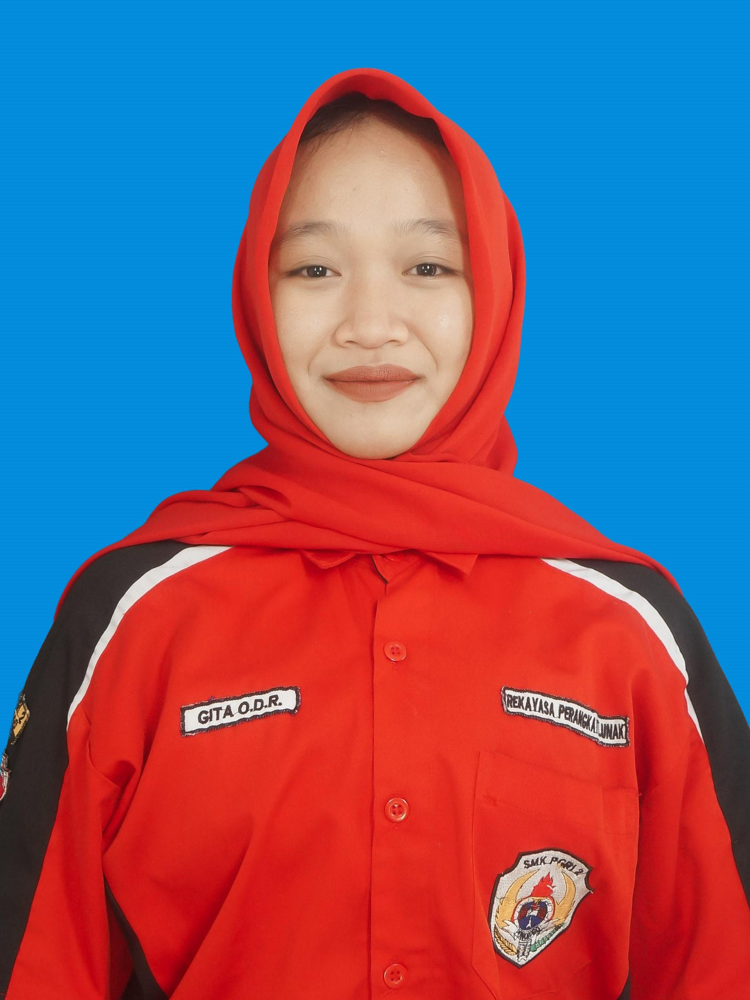

HELLO, WELCOME TO MY PORTFOLIO
Saya adalah siswa SMK PGRI 2 Ponorogo yang punya rasa ingin tahu tinggi dan suka mempelajari hal-hal baru. Saya senang mencoba sesuatu yang belum pernah saya lakukan, terutama di bidang teknologi dan pemrograman.
Kenali Saya
Aku adalah seorang siswa yang masih terus belajar mengenal diri sendiri dan dunia di sekitarku. Ada banyak hal yang ingin aku coba, banyak pengalaman yang ingin aku dapatkan, dan banyak mimpi yang ingin aku wujudkan.
Aku suka mempelajari hal baru, mencoba sesuatu yang belum pernah dilakukan, dan mencari tahu bagaimana sesuatu bisa bekerja. Dalam perjalanan belajar, tentu tidak semuanya berjalan mudah. Ada kalanya harus mengulang, memperbaiki kesalahan, dan mencoba lagi sampai menemukan hasil yang diinginkan.
Bagiku, hidup bukan tentang harus selalu menjadi yang paling hebat. Aku hanya ingin terus berkembang, punya pengalaman baru, dan menjadi seseorang yang lebih baik dari sebelumnya.
"Namung tiang tiung tiang alit, Menungsa mboten adoh saking luput, HIHUUU."
Beberapa kemampuan yang saya pelajari dan kembangkan.
Beberapa karya dan proyek yang pernah saya kerjakan selama belajar di bidang teknologi.
Aplikasi pengelolaan parkir untuk mencatat kendaraan, transaksi parkir, dan mengelola data pengguna.
Website untuk mengelola data laptop, pengguna, pengajuan peminjaman, dan pengembalian laptop.
Website pemungutan suara dengan fitur akun, data kontestan, voting, dan klasemen hasil suara.
Website toko sederhana untuk mengelola produk, kategori, stok barang, dan keranjang belanja.
Aplikasi pengelolaan data buku perpustakaan dengan login admin, CRUD, dan JSON API.
Kelas XII RPL 1
Rekayasa Perangkat Lunak
Pendidikan Menengah Pertama
Pengalaman organisasi dan kegiatan ekstrakurikuler yang pernah saya ikuti selama masa sekolah.
Anggota
Seksi Bidang Dokumentasi
Masa jabatan: 2 tahun
Anggota ekstrakurikuler Adiwiyata.
Mengikuti kegiatan yang berkaitan dengan kepedulian lingkungan.
Pemain alat musik Snare.
Berpartisipasi dalam kegiatan ekstrakurikuler drumband.
Terima kasih sudah mampir dan mengenal sedikit tentang saya. Mari terhubung dan berbagi pengalaman melalui Instagram!
@octdwira